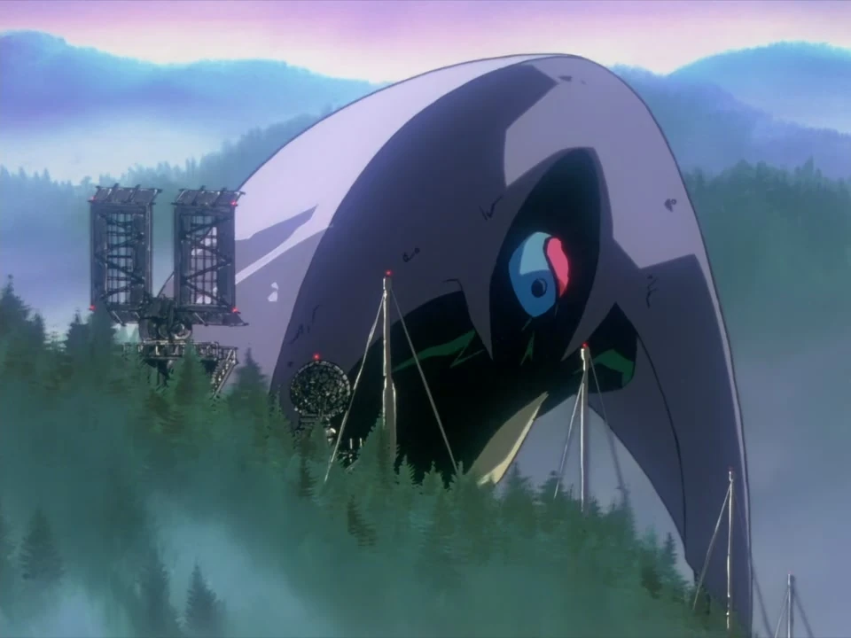

Israfel
Il possède la capacité unique de se scinder en deux créatures semblables. La NERV doit mettre en place une attaque synchronisée avec l'Eva-01 et l'Eva-02 pour pouvoir le vaincre.
Il possède la capacité unique de se scinder en deux créatures semblables. La NERV doit mettre en place une attaque synchronisée avec l'Eva-01 et l'Eva-02 pour pouvoir le vaincre.